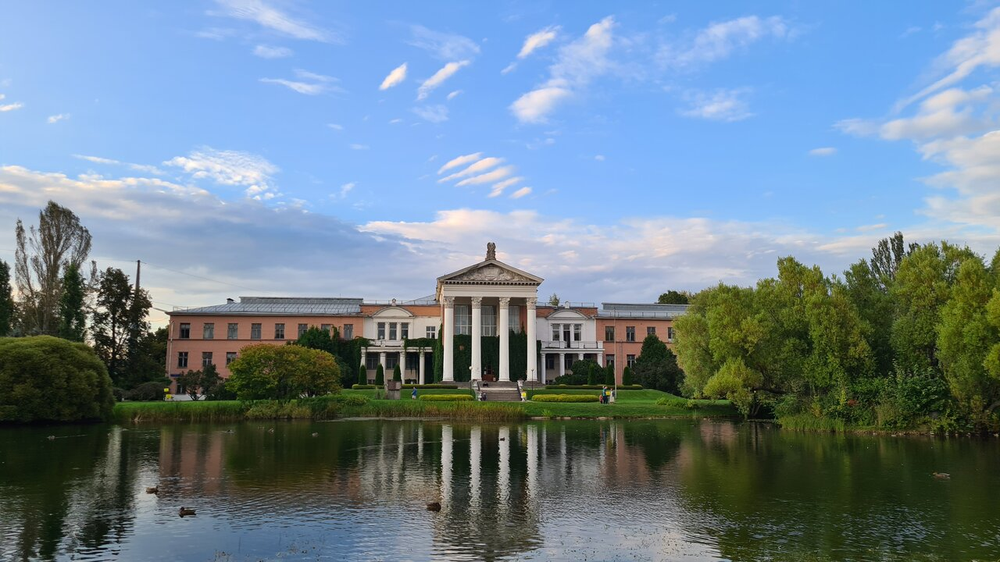
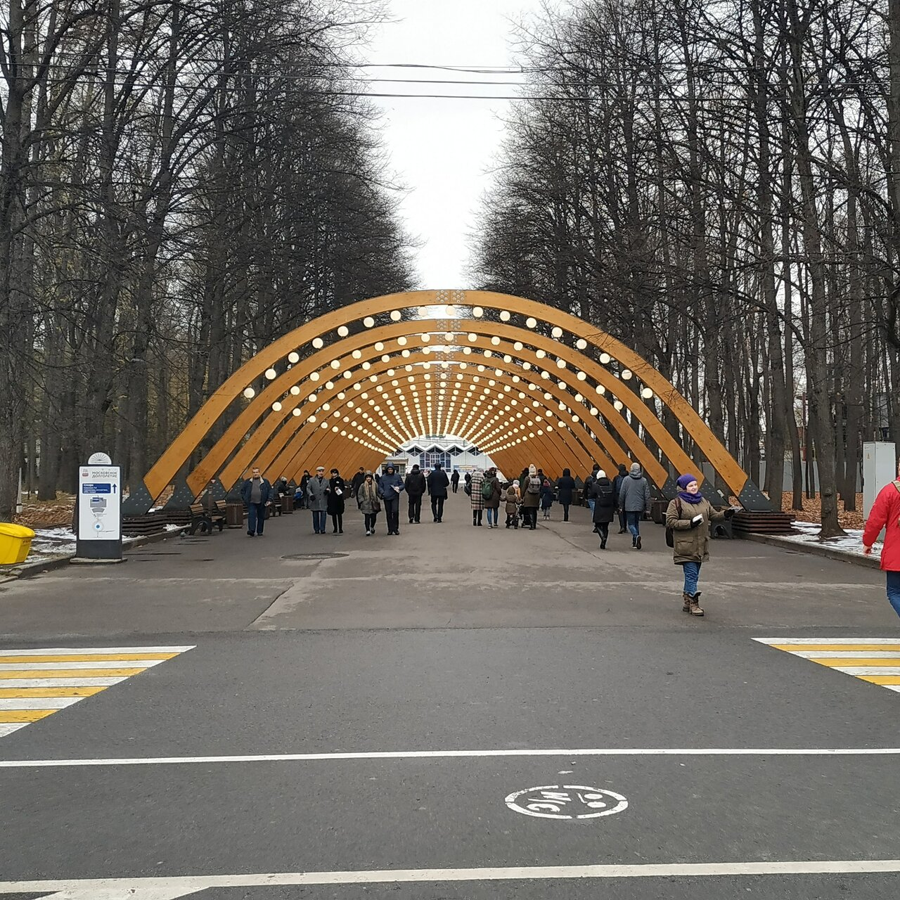
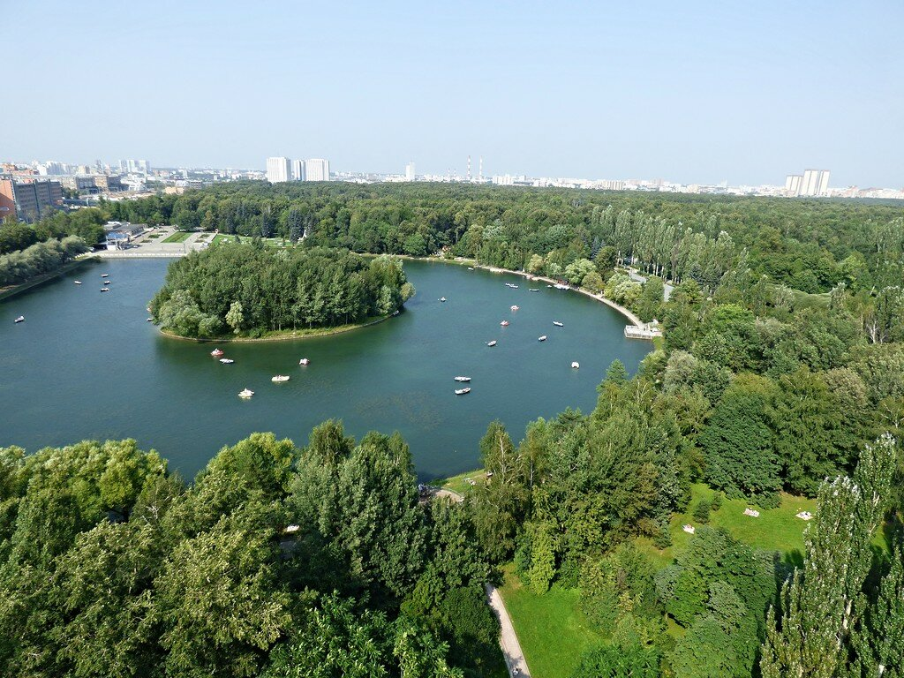
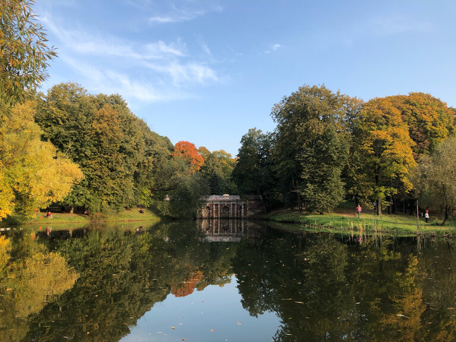
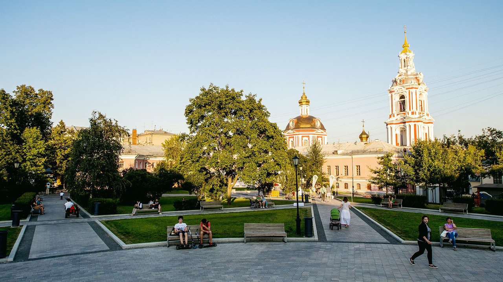

<!DOCTYPE html>
<html>
<head>
	<title>Web-ГИС проект</title>
	<meta charset = "UTF-8"/>
	<script src = "./libs/leaflet.js"></script>
	<script src = "http://api-maps.yandex.ru/2.1/?lang=ru-RU"></script>
	<script src = "./libs/Yandex.js"></script>
	<script src = "./libs/leaflet-measure.min.js"></script>
	<link rel = "stylesheet" href = "./libs/leaflet.css"/>
	<link rel = "stylesheet" href = "./libs/leaflet-measure.css"/>
	<style>
		html, body, #map{height:100%; width:100%; margin:0px}
	</style>
</head>
<body>
	<div id = "map"></div>
	<script>
	/*
		var bmURL = 'https://api.mapbox.com/styles/v1/{id}/tiles/{z}/{x}/{y}?access_token=pk.eyJ1IjoibWFwYm94IiwiYSI6ImNpejY4NXVycTA2emYycXBndHRqcmZ3N3gifQ.rJcFIG214AriISLbB6B5aw',
			bm = L.tileLayer(bmURL, {
				id: 'mapbox/streets-v11'
			});
	*/
		var osmMap = L.tileLayer('https://b.tile.openstreetmap.org/{z}/{x}/{y}.png', {
				attribution: 'Map provider OSM'
			}),
			osmWCMap = L.tileLayer('http://c.tile.stamen.com/watercolor/{z}/{x}/{y}.jpg', {
				attribution: 'WaterColor Map provider OSM'
			}),
			gSat = L.tileLayer('http://{s}.google.com/vt/lyrs=s&x={x}&y={y}&z={z}', {
				attribution: 'Google Sat provider',
				subdomains: ['mt0', 'mt1', 'mt2', 'mt3'],
				maxZoom: 20
			}),
			yMap = new L.Yandex('map', {
				attribution: 'Yandex map provider'
			});
		
		function traffic(){
			var actualProvider = new ymaps.traffic.provider.Actual({}, {
				infoLayerShow: true
			});
			actualProvider.setMap(this._yandex);
		};
		
		var yTr = new L.Yandex('overlay')
			.on('load', traffic);

		var fscMap = L.tileLayer.wms('http://fscrus.nextgis.com/api/resource/34/wms', {
				attribution: 'FSC map Provider',
				layers: 'siberia,euro',
				format: 'image/png',
				transparent: true
			});
		
		
		var baseLayers = {
				'OSM Карта': osmMap,
				'OSM Карта (акварель)': osmWCMap,
				'Google Спутник': gSat,
				'Yandex Карта': yMap
			};
		
		var overlayLayers = {
				'Yandex пробки': yTr,
				'FSC леса': fscMap
			};
		
		var myMap = L.map('map', {
				center: [55.763724, 37.661758],
				zoom: 16,
				layers: [osmMap]
			});

		var Icn = L.icon({
			iconSize: [32, 32],
			iconUrl: './data/icons/light-green-icon.png',
			iconAnchor: [16, 32],
			popupAnchor: [0, -20]
		})

		L.marker([55.840747, 37.602940], {
				title: 'Главный ботанический сад',
				icon: Icn
			})
			.bindPopup('<b>Название парка:</b> Главный ботанический сад' + '<br>' + '')
			.addTo(myMap);

		L.marker([55.803838, 37.672119], {
				title: 'Парк Сокольники'
			})
			.bindPopup('<b>Название парка:</b> Парк Сокольники' + '<br>' + '')
			.addTo(myMap);

		L.marker([55.777876, 37.784729], {
				title: 'Измайловский лесопарк'
			})
			.bindPopup('<b>Название парка:</b> Измайловский лесопарк' + '<br>' + '')
			.addTo(myMap);
			
		L.marker([55.764660, 37.690315], {
				title: 'Лефортовский парк'
			})
			.bindPopup('<b>Название парка:</b> Лефортовский парк' + '<br>' + '')
			.addTo(myMap);
			
		L.marker([55.767110, 37.659566], {
				title: 'Сад им. Н.Э. Баумана'
			})
			.bindPopup('<b>Название парка:</b> Сад им. Н.Э. Баумана' + '<br>' + '')
			.addTo(myMap);		
		
		var msrCtrl = new L.Control.Measure({
				primaryLengthUnit: 'kilometers',
				secondaryLengthUnit: 'meters',
				primaryAreaUnit: 'hectares',
				secondaryAreaUnit: 'sqmeters',
				decPoint: ',',
				thousandsSep: ' ',
				localization: 'ru',
				activeColor: '#74cc31',
				completedColor: '#3d8902'
			});
		
		L.control.layers(baseLayers, overlayLayers).addTo(myMap);
		
		L.control.scale({
			imperial: false,
			maxWidth: 300
		}).addTo(myMap);
		
		msrCtrl.addTo(myMap);
		
		
		
		
		
		
		
		
		
	</script>	
</body>
</html>